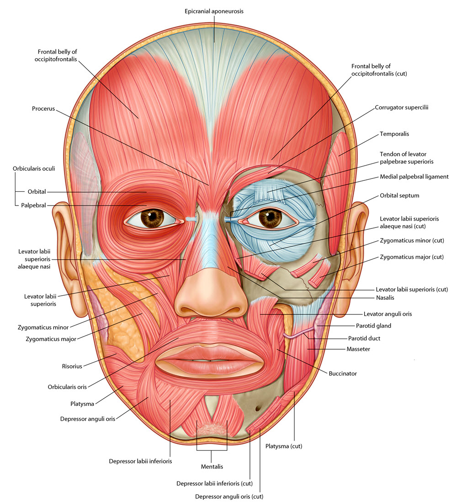
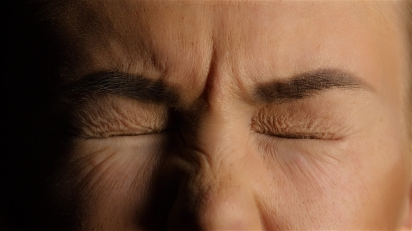

Neurology 5 - Face - Muscles: Page 2 of 7
×

|  |
| Tap on image to enlarge |
As you add muscles to the face, try to make your facial muscles function as the added muscle.
The orbital group consists of the following:
| The corrugator supercilii which draws the eyebrows medially. . |
The orbicularis oculi has two components. These are:
| The orbicularis oculi palpebral component which closes the eye gently. This muscle is not indexed on our cadaver. . |
|
| And the orbicularis oculi orbital component which closes the eye forcefully.  . |